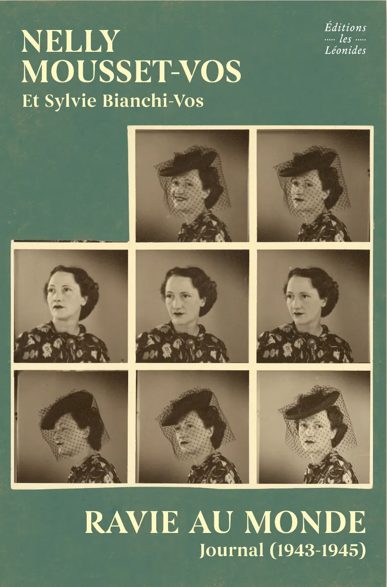
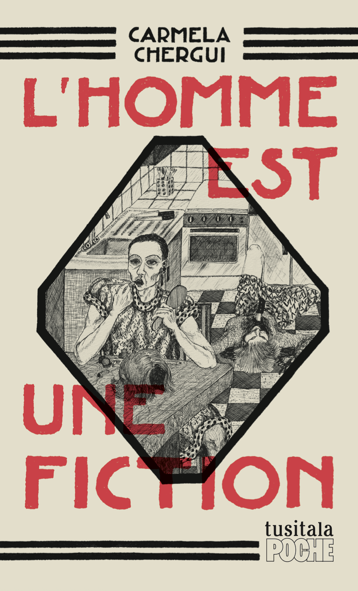

Ça peut paraître bizarre, mais j’ai emprunté ce livre après un club de lecture consacré à la musique. Nelly Mousset-Vos était en effet résistante pendant la Seconde Guerre mondiale, mais aussi cantatrice. Sa petite fille, Sylvie, a conçu Ravie au monde à partir de lettres et d’un journal retrouvés dans une malle. C’est un témoignage forcément important, en particulier s’agissant du journal qu’on peut lire dans son entièreté et qui documente ses années passées d’abord en prison puis dans l’enfer des camps de concentration de Ravensbrück et de Mauthausen. Chose merveilleuse étant donné le contexte, Nelly rencontrera à Ravensbrück Nadine Hwang, avec qui elle aura une relation intense pendant et après les camps (dont sa sortie en vie relève par ailleurs presque du miracle). C’est donc aussi une histoire d’amour lesbienne, née au milieu du carnage et de la désolation, lors d’un chant de Noël.
Sortie : 2026

Carmela Chergui est cofondatrice des éditions Tusitala, qui éditent aussi son premier livre L’homme est une fiction. L’autrice y raconte comment, lorsqu’elle travaillait à la librairie Filigranes à Bruxelles, elle déniche dans le vieux fond des éditions Futuropolis - dont les titres sont à ce moment-là disponibles pour une bouchée de pain - une BD signée Etienne Mériaux. La BD, Étrange apocalypse, lui rappelle des souvenirs d’enfance et Carmela Chergui se met ainsi à enquêter sur cet auteur oublié, passé entre autres par Bruxelles, où il a vécu quelque temps jusqu’à ce que sa santé mentale se dégrade. Elle rencontre des connaissances, des amis, de la famille, pour retracer son parcours tout en s’interrogeant sur les échos que cela fait résonner en elle. C’est un petit livre de poche superbement édité et une courte enquête très bien racontée.
Sortie : 2025